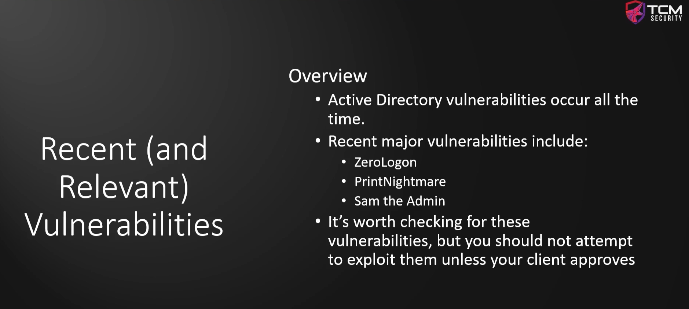

These bugs are very very severe if ran against a domain controller it could acutally take down an entire domain.
Should we run this attacks ?_?
You should not run ever it in a pen-test.
All the above vulnerability are having checher's out there if you go to Github and say Print nightmare check or Sam the admin check or Zero log on check.
